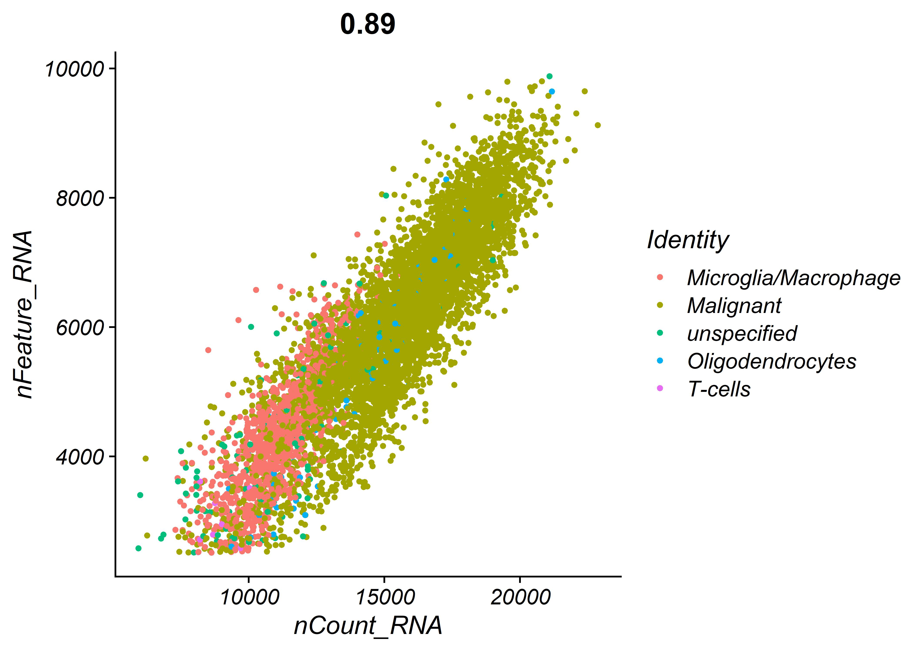
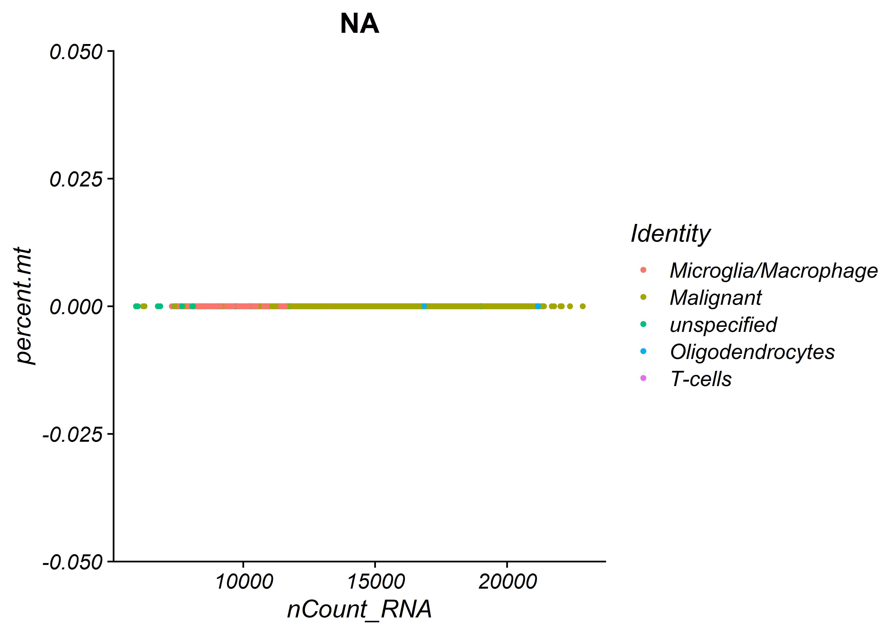
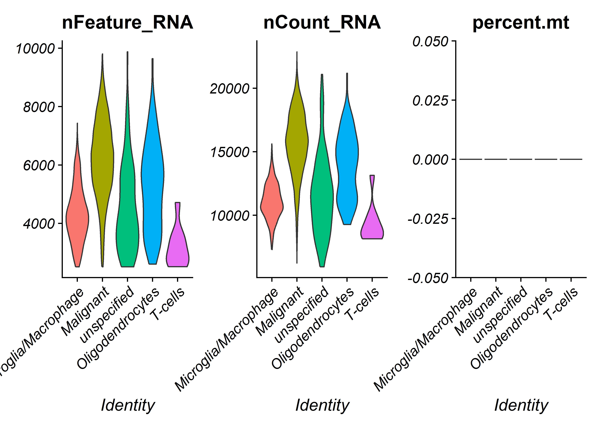

Atrocytoma
SCRNA-seq analysis - astrocytoma
astrocytoma data was obtained from single cell portal. single cell analysis executed with R program and Seurat package, Pallad expression was examined in astrocytoma data.
Libreries
pacman library purpose is to load multiple libraries from a vector
library(pacman)
labrvec <- c("tidyverse","ggplot2","ggpubr",
"Seurat","future","fsthet","patchwork","stringr","readxl","stats")
pacman::p_load(labrvec,install = TRUE,character.only = TRUE)Files
loading RDS file after analysis, instead of building the file
# load RDS file
astrocytoma_seurat <- readRDS("astrocytomaWmetadata.rds")
# seg genes palld astrocytoma
#seg.genes.csv <- read.delim2("hsa_seek_palld_astro_exp.txt", sep="\t",header = F, stringsAsFactors = F,check.names = FALSE)
# # reading metada file
# astrocytoma.metadata<-read.csv(file = "IDH_A_cell_type_assignment_portal_v2.txt",sep ="\t" )
# # reading count matrix file
# astrocytoma.matrix <- read.csv(file = "IDH_A_processed_data_portal.txt",sep ="\t",check.names = FALSE)Processing Data
editing features to work with Seurat package
reading metadata looking & processing
head(astrocytoma_metadata)
# seg.genes.csv <- seg.genes.csv[5:nrow(seg.genes.csv),]
# #head(seg.genes.csv)
# colnames(seg.genes.csv) <- seg.genes.csv[1,]
# rownames(seg.genes.csv) <- seg.genes.csv$Rank
# seg.genes.csv <- seg.genes.csv[-1,-1]
# # adding padj
# seg.genes.csv$Padj <- p.adjust(seg.genes.csv$`P-Value`,method = "fdr")
# seg.padj.genes <- filter(seg.genes.csv,Padj < 0.05)
# rownames(seg.genes.csv) <- seg.genes.csv[,2]
# colnames(seg.genes.csv) <- seg.genes.csv[2,]
# # changing the row names to genes and deliting the column
# rownames(astrocytoma.matrix) <- astrocytoma.matrix$Gene
# astrocytoma.matrix <- astrocytoma.matrix[,-1]
#
# ## cleaning duplicate names of cells
# astrocytoma.metadata[which(duplicated(astrocytoma.metadata$NAME)),]
# astrocytoma.metadata <- astrocytoma.metadata[-1106,]
# # removing the first row in the meta data dont relevent
# astrocytoma.metadata <- astrocytoma.metadata[-1,]
# # changing metadata row names to cells names
# rownames(astrocytoma.metadata) <- astrocytoma.metadata$NAME
# # removing the column of name from the metadata
# astrocytoma.metadata <- astrocytoma.metadata[,-1]
# # looking at the edited metadata
# dim(astrocytoma.metadata)
# dim(astrocytoma.matrix)
#
# row.names(astrocytoma.metadata) <- remove.spaces(row.names(astrocytoma.metadata) )
# row.names(astrocytoma.metadata) <- str_replace_all(row.names(astrocytoma.metadata) ,"[\\.-]" , "_")
# colnames(astrocytoma.matrix)<- str_replace_all(colnames(astrocytoma.matrix), "[\\.-]", "_")
# # setdiff(x = row.names(astrocytoma.metadata),y = colnames(astrocytoma.matrix))
# # setdiff(x =colnames(astrocytoma.matrix),y = row.names(astrocytoma.metadata) )
# # creating saeurat object without metadata for the workflow and avoiding unspesified cells
# # thos cells will apear in the metadata as NA
# astrocytoma_seurat <- CreateSeuratObject(
# astrocytoma.matrix,
# project = "astrocytomaProject",
# assay = "RNA",
# min.cells = 0,
# min.features = 0,
# names.field = 1,
# names.delim = "_",
# meta.data = astrocytoma.metadata ,
# )
# # row.names(astrocytoma_seurat)
# # table(astrocytoma_seurat@meta.data$CLUSTER)
# #sammury seurat object
# #astrocytoma_seurat
# Idents(astrocytoma_seurat) <- "astrocytoma"
Idents(astrocytoma_seurat) <- "CLUSTER"
# looking for mitochondrial DNA
# astrocytoma_seurat[["percent.mt"]] <- PercentageFeatureSet(object = astrocytoma_seurat, pattern = "^MT-")
#plotting the available data of Ncount RNA mitochondrial dna and nfeature rna
plot1 <- FeatureScatter(astrocytoma_seurat, feature1 = "nCount_RNA", feature2 = "percent.mt")
plot2 <- FeatureScatter(astrocytoma_seurat, feature1 = "nCount_RNA", feature2 = "nFeature_RNA")
plot2 
plot1
# violin plot for each
VlnPlot(astrocytoma_seurat, features = c("nFeature_RNA", "nCount_RNA","percent.mt"), ncol = 3,pt.size = 0)
Feature-plot
most significant genes
# # theshold where chosen by the violin plot above and its seems there isnt mitochondrial in data
# astrocytoma_seurat <- subset(astrocytoma_seurat, subset = nFeature_RNA > 2500 & nFeature_RNA < 10000)
# # normalize data
# #astrocytoma_seurat <- NormalizeData(astrocytoma_seurat)
# ## Variable gene selection ----
# astrocytoma_seurat <- FindVariableFeatures(astrocytoma_seurat, selection.method = "vst", nfeatures = 2000)
top10 <- head(VariableFeatures(astrocytoma_seurat), 10)
# top10
# plot variable features with and without labels
plot1 <- VariableFeaturePlot(astrocytoma_seurat)
plot2 <- LabelPoints(plot = plot1, points = top10, repel = TRUE)
plot1 + plot2
Dimplot & heatmap
astrocytoma_seurat <- ScaleData(astrocytoma_seurat)
astrocytoma_seurat <- RunPCA(astrocytoma_seurat, features = VariableFeatures(object = astrocytoma_seurat))
VizDimLoadings(astrocytoma_seurat, dims = 1:2, reduction = "pca")
DimPlot(astrocytoma_seurat, reduction = "pca")
DimHeatmap(astrocytoma_seurat, dims = 1, cells = 500, balanced = TRUE)
DimHeatmap(astrocytoma_seurat, dims = 1:9, cells = 500, balanced = TRUE)
Elbowplot & Jackstraw plot
astrocytoma_seurat <- JackStraw(astrocytoma_seurat, num.replicate = 100)
astrocytoma_seurat <- ScoreJackStraw(astrocytoma_seurat, dims = 1:20)
JackStrawPlot(astrocytoma_seurat,dims = 1:20)
ElbowPlot(astrocytoma_seurat)
Umap & Tsne plot
unspecified in this case was ignored
# astrocytoma_seurat <- FindNeighbors(astrocytoma_seurat, dims = 1:10)
# astrocytoma_seurat <- FindClusters(astrocytoma_seurat, resolution = 0.5)
# Look at cluster IDs of the first 5 cells
# head(Idents(astrocytoma_seurat), 15)
# astrocytoma_seurat <- RunUMAP(astrocytoma_seurat, dims = 1:10)
astrocytoma_seurat_2 <- subset(astrocytoma_seurat,subset = CLUSTER !="unspecified" )
my_levels <- c("T-cells","Oligodendrocytes" ,"Malignant","Microglia/Macrophage")
Idents(astrocytoma_seurat_2) <- factor(Idents(astrocytoma_seurat_2), levels= )
astrocytoma_seurat_2@meta.data$CLUSTER <- factor(x = astrocytoma_seurat_2@meta.data$CLUSTER, levels = c("Microglia/Macrophage","Malignant","Oligodendrocytes" ,"T-cells"))
DimPlot(astrocytoma_seurat_2, reduction = "umap", label = TRUE,group.by = "CLUSTER") +ggtitle("CellAssignment")
DimPlot(astrocytoma_seurat_2, reduction = "tsne", label = TRUE,group.by = "CLUSTER") +ggtitle("CellAssignment")
# table(astrocytoma_seurat@meta.data$CLUSTER)
# note that you can set `label = TRUE` or use the LabelClusters function to help label
# individual clustersViolin Plot
expression of palld in malignant cell is significant
my_comp_astro <- list(c("Malignant","Microglia/Macrophage"),c("Oligodendrocytes","Malignant"),c("T-cells","Malignant"),
c("T-cells","Oligodendrocytes"),c("T-cells","Microglia/Macrophage"),c("Microglia/Macrophage","Oligodendrocytes"))
VlnPlot(astrocytoma_seurat_2, features = "PALLD", group.by = "CLUSTER", sort = FALSE,pt.size = 0) +
stat_compare_means(method = 'kruskal.test',label.y =13)+ ylim(0,13)+xlab("Cell Type")+
stat_summary(fun.data = "mean_sdl", fun.args = list(mult = 1), geom = "pointrange", color = "red",size=0.1)+
geom_signif(comparisons = my_comp_astro,map_signif_level = TRUE, y_position=c(9,7,8,9,10,11,12))+NoLegend()+
theme(axis.text.x = element_text(angle = 25))